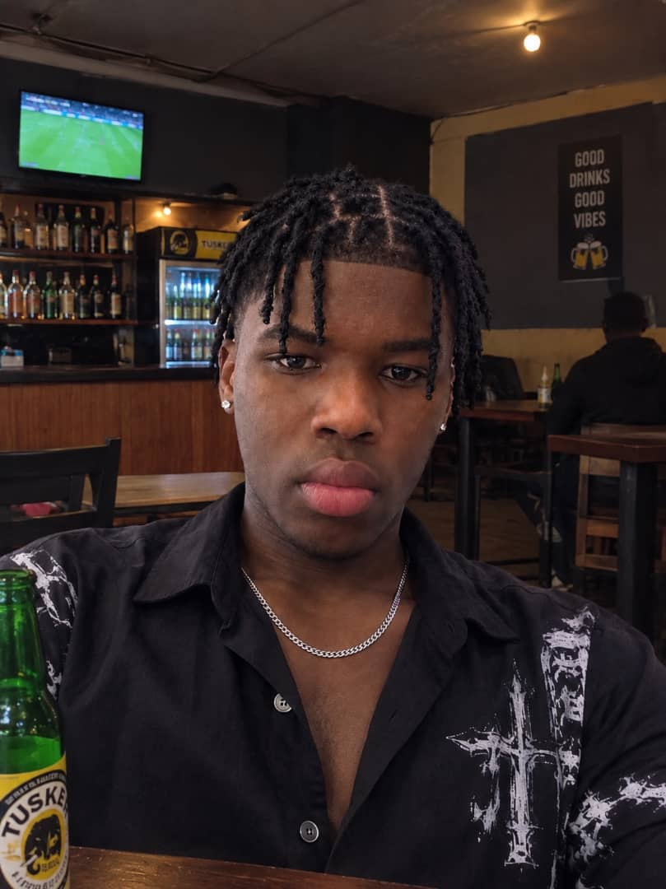
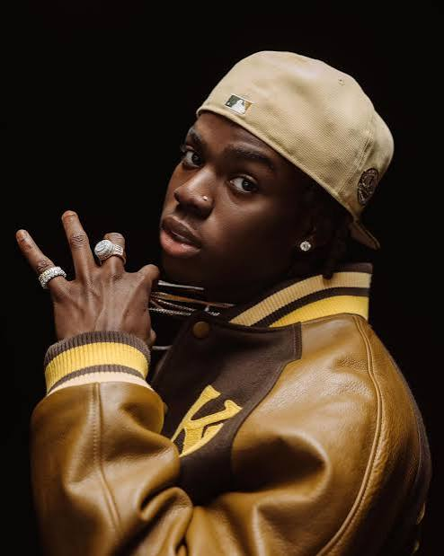

Learn from experienced professionals in the coffee industry.

Dr. Okello specialises in agricultural research and coffee production technologies. He has extensive experience in developing innovative farming methods for improved coffee productivity.
Sarah works with coffee farmers to improve production and market access. She promotes sustainable agricultural practices and entrepreneurship within the coffee sector.

Peter is experienced in coffee processing, quality management and value addition. He supports businesses in improving coffee processing standards and product quality.
Grace specialises in international coffee markets and export development. She advises agricultural businesses on market opportunities and international trade requirements.
| Name | Organisation | Country | Session Title |
|---|---|---|---|
| Michael Ochieng | Digital Agriculture Network | Kenya | Digital Technology in Coffee Marketing |
| Dr. Elizabeth Auma | African Agricultural Institute | Uganda | Sustainable Coffee Production |
| Robert Mensah | Ghana Coffee Development Board | Ghana | International Coffee Quality Standards |
| David Ssekandi | Uganda Coffee Exporters Association | Uganda | Coffee Export and Global Markets |
Researchers, academicians, agricultural professionals and industry experts are invited to submit original research papers and presentations related to coffee production, processing, marketing, technology and sustainable agricultural development.
Submissions should include a clear title, author details, an abstract and relevant keywords. Abstracts should summarise the research objectives, methodology and major findings, and must be submitted in PDF format through the event's official submission channel.
| Milestone | Date | Status |
|---|---|---|
| Call for Papers Opens | 1 June 2026 | Open |
| Abstract Submission Deadline | 31 July 2026 | Closed |
| Acceptance Notification | 20 August 2026 | Completed |